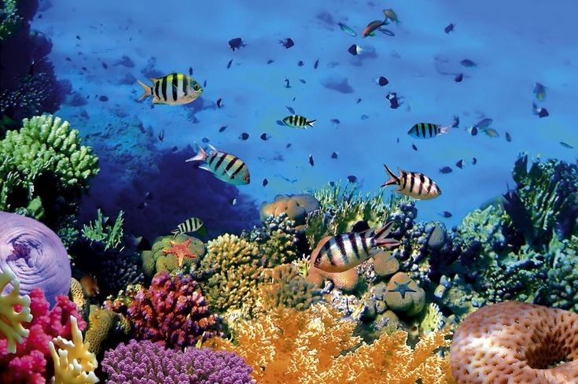
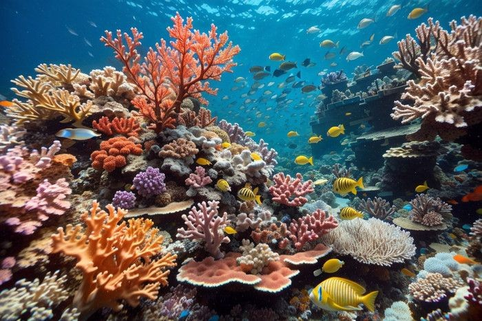

Selamatkan Laut dari Sampah
Laut merupakan sumber kehidupan bagi banyak makhluk hidup. Namun saat ini laut menghadapi ancaman besar dari sampah, terutama sampah plastik yang sulit terurai.

Fakta Sampah Laut
8 Juta
Ton sampah plastik masuk ke laut setiap tahun
700+
Spesies laut terdampak oleh sampah plastik
2050
Diperkirakan plastik lebih banyak dari ikan
Jenis Sampah Laut
Sampah laut adalah limbah yang masuk ke lingkungan laut akibat aktivitas manusia. Sampah ini dapat berasal dari daratan, pantai, maupun aktivitas di laut.
Dampak Sampah Laut

Pencemaran Air
Sampah plastik sulit terurai dan dapat mencemari air laut dalam waktu yang sangat lama.

Bahaya bagi Hewan Laut
Banyak hewan laut seperti penyu dan ikan memakan plastik karena mengira plastik sebagai makanan.

Kerusakan Terumbu Karang
Sampah yang menumpuk dapat merusak terumbu karang yang merupakan habitat penting bagi banyak organisme laut.
Cara Mengurangi Sampah Laut
Laporan Kondisi Pantai
Pengunjung dapat melaporkan kondisi pantai atau memberikan saran untuk menjaga kelestarian laut.